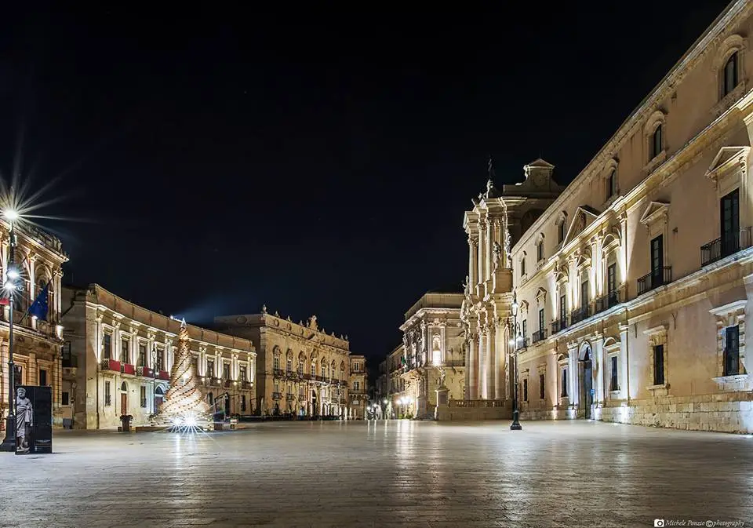

Piazza Duomo è la più importante piazza di Siracusa. Sorge nella parte alta dell'isola di Ortigia e rappresenta il simbolo della ricostruzione barocca dopo il terremoto del 1693. Considerata fin dall'antichità come il luogo sacro della città, la Piazza è dominata dalla Cattedrale della Natività di Maria Santissima. Altri edifici civili e religiosi si affacciano sulla Piazza, facendo di questo ambiente urbano il fulcro del potere civile e religioso di Siracusa.
← Torna alla Home